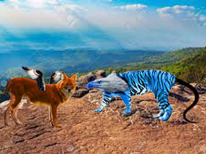

Click on the images below:
Kaleidoscope: This art was orignally a picture of a cooked Turkey which was edited to make it look like it was now. The creative choices I used on the orignial image was a filter that made the image look vibrant. From there I added adjustments to the overall iumage to make the image even more colorful. After this I pixelated the image with another filter and proceeded to shrink the image resize, rotate, and flip to make it into what it is right now.
Mandala: This art was created using the custom shape tool which was a boat. I had to add the boat and size it to my liking, then I had to place it at the top middle of the canvas size and copy and paste it. Afterwards I had to duplicate the layer and rotate 90 degrees so the 2 new boats were on the left and right sides. After this we duplicate the layer and merge them again but this time we rotate. Make sure the layers have different color shapes on them. From here on out its a continous theme of dupicating and merging layers but scaling it to the center and ratating 15 degrees. Add a drop shadow and stroke to your liking and its finished when it closes in the middle or is very close to it.
PopART: This art was created by taking an image of a person, then cropping it into a square. Afterwards I removed the subject from the background and increased the contrast to 100 and the brightness slightly up. Then I changed the levels and selected the subject again to put a gradient map on it so the color of the subject changed. Then I replaced the empty background with a solid color. Finally I duplicated the layer 3 times so there were 4 in total and changed the hue and saturation for all of them to get the final product.
Mythical Creature Showdown: I created this piece of art by taking 3 different animal images for each of the creatures you see in the picture. I chose a dhole, bobcat, and some wings from a random bird these animals were chosen because they can beat each of the other animals used to create the blue creature on the right. The Blue creature is made of an eagle, a tiger, and a snake. To make these creatures with these images you first have to rasterize each layer and then get rid of the background. From there you choose what parts of the animals you want to keep and erase the rest of the parts for that animal. You then combine them and place them to look like is a whole other creature. Lastly, all I did was adjust the colors to make it more appealing to the audience.